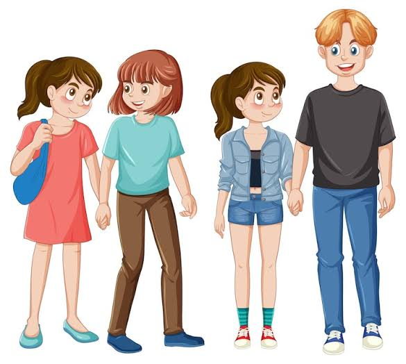

¿Qué es la Educación Sexual Integral?
Es un proceso de enseñanza y aprendizaje que abarca aspectos emocionales, físicos, sociales y cognitivos de la sexualidad. No se limita únicamente a la anatomía o la reproducción, sino que busca dotar a los adolescentes de herramientas, conocimientos y valores para cuidar su cuerpo.
Formación en Valores y Convivencia
La ESI enseña sobre anatomía, pero también promueve valores como la empatía, el respeto a la diversidad, la equidad de género y la no discriminación. Fomenta un entorno donde todas las personas se sientan valoradas y respetadas, ayudando a prevenir el acoso escolar.
Importancia del Derecho a la Información
La sexualidad abarca la dimensión afectiva y emocional. Durante la adolescencia, aprender a identificar, expresar y gestionar las emociones es clave para construir vínculos afectivos sanos. La ESI brinda herramientas para comprender los sentimientos.

El Rol de los Afectos en la Adolescencia
La ESI enseña sobre anatomía, pero también promueve valores como la empatía, el respeto a la diversidad, la equidad de género y la no discriminación. Fomenta un entorno donde todas las personas se sientan valoradas y respetadas, ayudando a prevenir el acoso escolar.

¿SABES...?
La construcción de una vida plena y saludable en la adolescencia requiere mantenerse informado a través de fuentes confiables, científicas y objetivas, alejadas de mitos o falsas creencias que abundan en las redes sociales.al no solo nos permite proteger nuestro bienestar físico y emocional.